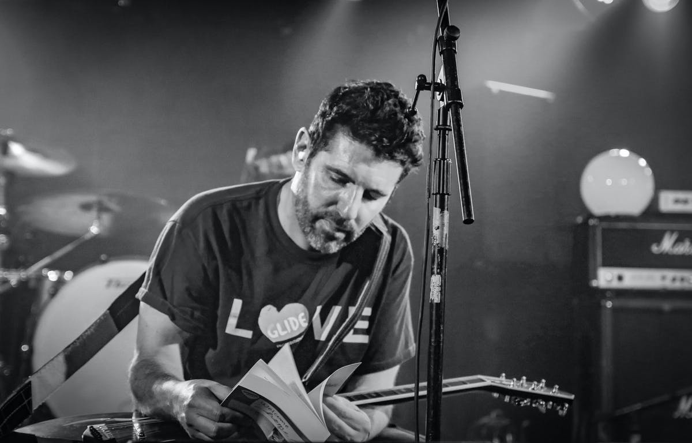
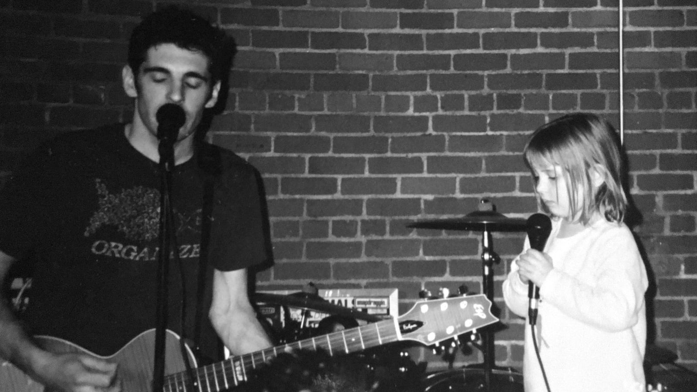

Limited Press Stories
We talk bands, solo careers, majors and indies with the underground hero.
The first Far album that came on my radar, along with most people, was your third, Tin Cans With Strings to You. That one was released in 1995 on Immortal Records, a label that was distributed by Epic. What are your thoughts on the first two Far albums?
Oh, they have their moments, I guess. We were just exploring, trying to figure it out. Quick is a lot closer to the band we became.
Far’s next album, Water & Solutions (1998), is my favorite release from the band. Former Barkmarket vocalist/guitarist Dave Sardy produced that one. He’s also worked with Oasis, Slayer, and LCD Soundsystem, among other artists, through the years.
Yea, that’s my favorite too. Working with Sardy was incredible. He was tough in the best ways. He made our songs tighter, he got great performances out of us, he was calm no matter how stressed we’d get. I feel really lucky that we got to work with him before he got too busy. We were all into Barkmarket, and especially that insane first track on L. Ron. We wanted the record to be huge and lo-fi/hi-fi like that.
Matranga live with Far in San Francisco, 2010
Why did Far break up in 1998?
We were always a little stressed as a band, and lots of touring with mixed results took its toll. I had really different needs than everyone else because I was a young father. I also had some songs arriving that I loved, and they didn’t. I wanted to just take a break to make a little pop album, and it seems like that freaked Shaun out, and we broke up at the end of that tour.
After Far split up, you focused on your solo project, onelinedrawing, for a while, eventually releasing splits with Rival Schools and Sense Field. Stylistically, the songwriting and performance approach was clearly less “aggro” as the stuff you did in Far. Was that important to you at that point?
It wasn’t really important for me to be more or less anything. I kind of think it’s all the same thing, really. I did enjoy the freedom of being solo, though. I really just follow the songs around. Whatever ideas interest me, I just do my best to make them real.
2000 saw you form New End Original with Norman Brannon (Texas Is the Reason, Shelter), Charlie Walker (Chamberlain), and Scott Winegard (Texas Is the Reason, Fountainhead). That band’s sole album, Thriller (2001), featured a song called “Lukewarm” that I felt should have been a huge crossover radio single.
I love that song, still sing it all the time. Would’ve been cool to hear it on the radio, right? Coke wanted to use it in a big ad campaign, that would’ve helped I’m sure. And made us some money. But I said no. I didn’t like the idea of someone coming to a show because they heard us in a soda commercial. I know that sounds really old-fashioned, with all the indie bands selling their music to the highest bidder these days, but I’m still happy with the choice.
Why didn’t New End Original continue on after Thriller?
We broke up on tour, too. Charlie and Scott quit suddenly, it was a bummer. Norman and I thought about playing with new people, but it never really felt right. The New End record started as a onelinedrawing record. I had all the songs written. Looking back, I kind of wish it had just stayed that way. Oh well.
That brings us to Gratitude, a band you sang lead vocals in that also included Jeremy Tappero (The Stereo, Attention), Mark Weinberg (Crumb), Bob Lindsay, and David Jarnstrom (Attention). Were you wary about jumping back into a band situation again?
Yeah, I wasn’t sure how it would go, I just wanted to give it a try. Mark is an incredibly enthusiastic person, it’s kind of intoxicating. We got signed really easily, in a really organic way. It felt right. And then it all went to shit. Again, in hindsight, probably should have just stayed solo.
Matranga playing alonside his daughter.
The self-titled Gratitude album from 2005 featured some of the biggest melodic hooks of your discography to date. “Drive Away” and “Dream, Again” are incredible songs. How do you feel about those songs, and how was it working with producer Jim Scott (Wilco, Tom Petty)?
Yeah, I really love some of those songs, and working with Jim Scott was amazing. He made the studio as relaxed and beautiful as it could possibly be. He literally had road cases full of tapestries and lights and everything, and he put them up everywhere. He’s obviously worked with so many amazing bands, and he’s kind and grounded, and he just adores songs. I’d love to work with him again somehow.
Why did Gratitude end up calling it quits?
Mark quit, and then threatened to sue me if we kept going under that band name. It was a very stressful time, and we didn’t survive it.
You’ve been releasing material under your name now for over a decade. Was there any liberation in that?
Sometimes I think I quit everything a little too soon. Not in a bad way. Anyway, I was burnt on the onelinedrawing idea turning into a bit of a brand as emo got bigger, and too many other singers from bands were starting solo projects, so I went the other way.
This is the part of the interview where I ask you if you had to pick one song from your entire discography that you think best captures the spirit of what you’ve done musically, which one would it be?
Well, maybe because i was just talking about it, but I’ll stick with "Tides." This time next year, I won’t be here. Trying to keep showing up, and walking in the light. Simple, ambiguous mood, lots of room for dynamics and improvisation. Yea, that’s as good a representative as any. Dammit, I’m welling up again. I do that a lot. Like Prince said: always cry for love, never cry for pain. Thanks for asking, and for caring.